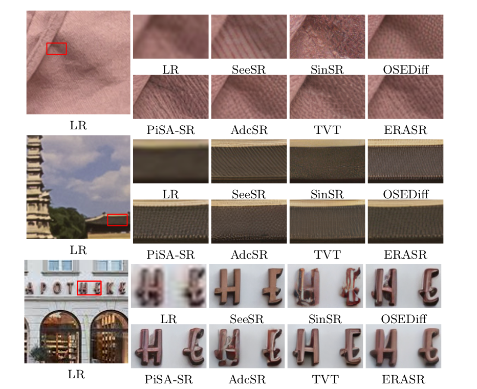

Effective Rank Allocation for Diffusion-Based Real-World Super-Resolution
Authors: Cansu Korkmaz Soner, Radu Timofte
Venue: (Under Review) European Conference on Computer Vision (ECCV), Sep. 2026

Overview
This work, referred to as ERASR, studies how to allocate adaptation rank effectively across a diffusion-based backbone for one-step real-world super-resolution, building on rank-aware, parameter-efficient adaptation ideas explored in the author's related work on AdaptSR and FraIR. Qualitative comparisons against recent one-step diffusion SR methods — SeeSR, SinSR, OSEDiff, PiSA-SR, AdcSR, and TVT — show sharper recovery of fine textures and legible fonts. The paper is currently under review; a full overview, quantitative results, and links will be added once it is public.